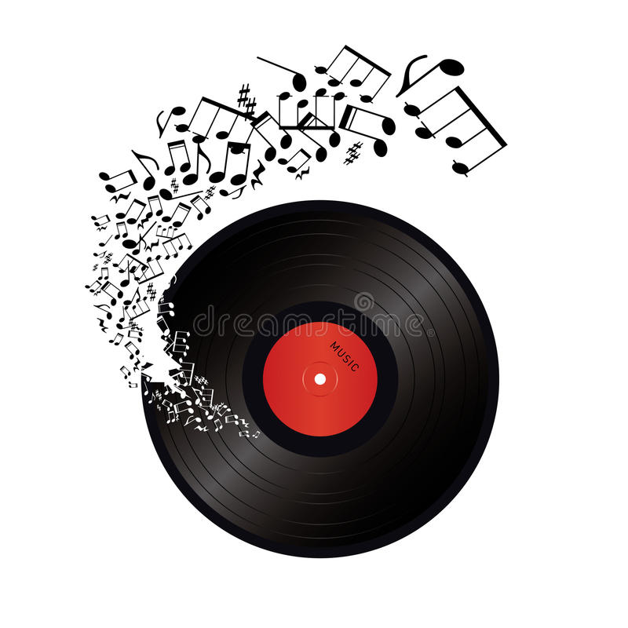

<!--
  Generated template for the ReproductorPage page.

  See http://ionicframework.com/docs/components/#navigation for more info on
  Ionic pages and navigation.
-->
<ion-header>

  <ion-navbar color="primary">
    <ion-title>Reproductor</ion-title>
  </ion-navbar>
  
</ion-header>


<ion-content>
  <ion-toolbar no-border-top>
   <ion-title>{{ cancion }}</ion-title>
 </ion-toolbar>

  
  <audio controls>
    <source src="../../assets/audio/{{ cancion }}.mp3" type="audio/mpeg" onerror="document.getElementById('error').innerHTML= 'No se encontro la cancion'">
  </audio>
  <p id="error" style="color:red;"></p>

<a href="https://www.youtube.com/results?search_query={{linkCancion}}">
      <button ion-button color="danger" block>
         Buscar en Youtube
       </button>
</a>
<h3>PlayList</h3>
<ion-list>
  <span *ngFor="let item of playlist">
    
  
      <div *ngIf = "cancion == item; else elsetag">
          <button ion-item color="primary">
            {{ item }}
          </button>
        </div>

        
        <ng-template #elsetag>
        <div>
          <button ion-item (click)="cancionElegida(item)">
            {{ item }}
          </button>
        </div>
      </ng-template>

</span>
  </ion-list>

</ion-content>
